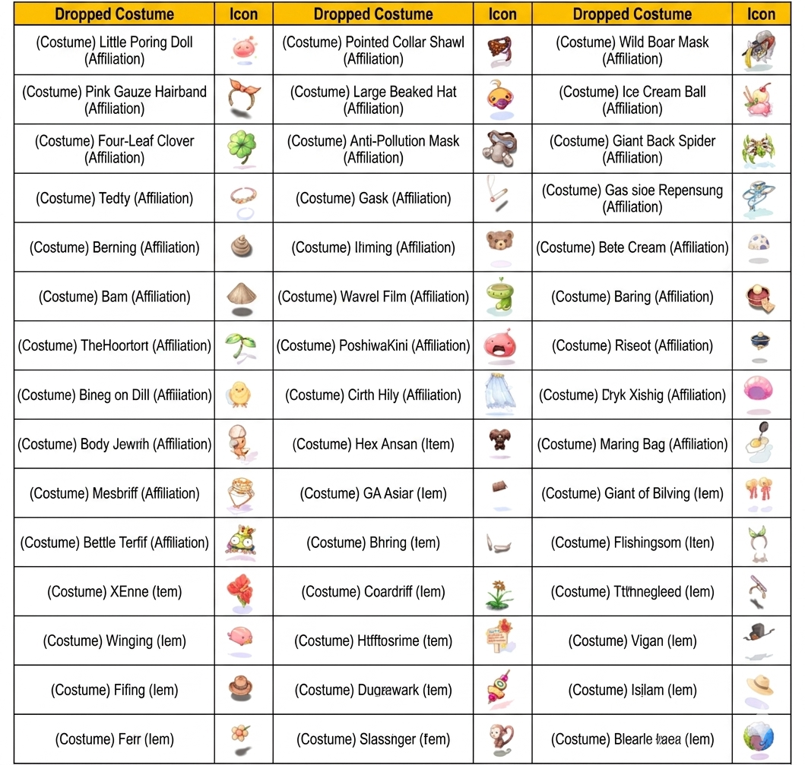
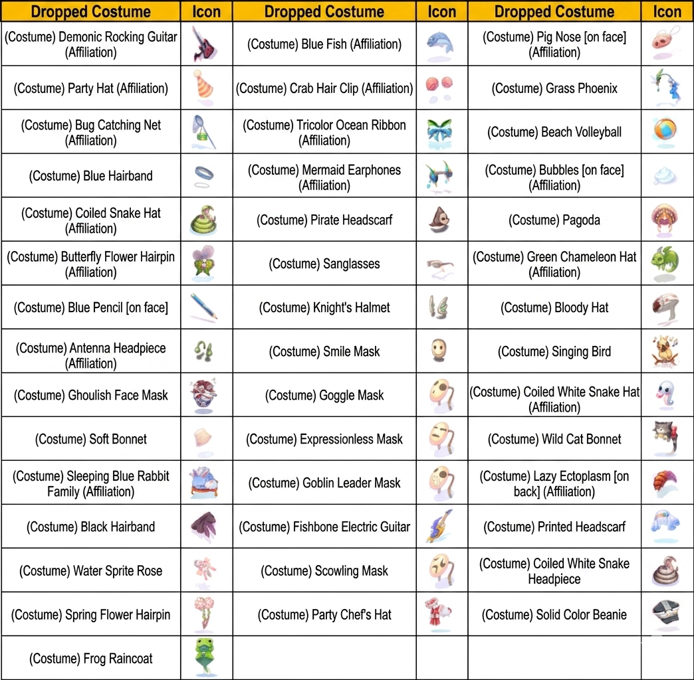
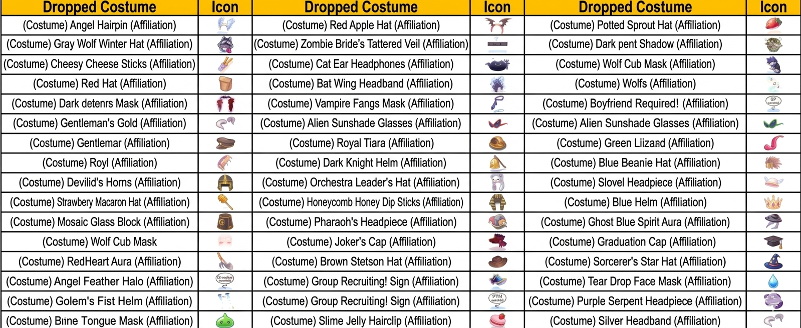

Kostüm-System
Themen-Kostüme aus Map-Drops, Gebundene vs. Ungebundene Varianten, Kostüm-Enchanten bei Barbie, und der 50%-Enchant-Faktor, der deinen Look nicht zerstört.
👗 Drei Subsysteme im Überblick
🎁 Map-Drops
Ein Teil aller Kostüme fällt auf jeder einzelnen Map als „Themen-Kostüm" von Monstern — diese sind immer gebundene Variante.
🔀 Conversion
Zwischen gebundenen und ungebundenen Varianten kann bei einem NPC in Prontera gewechselt werden — je nach Richtung mit unterschiedlichen Items.
✨ Enchant
Nur gebundene Kostüme können enchantet werden. Enchant-NPC Barbie vergibt zusätzliche Stats mit 50% Erfolgsrate — bei Fail bleibt das Kostüm unbeschädigt.
🎁 Teil 1: Map-Drop-Kostüme
In RO Zero werden viele seltene Kostüme als „Themen-Kostüme" auf jeder einzelnen Map im Spiel platziert. Diese sind nur durch Monster-Kills zu droppen, funktional aber identisch zu anderen Kostümen.
Drop-Liste
Die Liste wird mit jedem Patch erweitert:



🔀 Teil 2: Kostüm-Conversion
Kostüm-Besitzstatus-Bearbeiter Qi Zhoukū
Position: prontera 265 278
🔓 Ungebunden → Gebunden
Gib ein ungebundenes Kostüm + Kostüm-Besitzstatus-Entferner → Rückgabe: gebundene Variante.
Sinnvoll, wenn du das Kostüm enchanten willst (nur gebundene gehen).
🔒 Gebunden → Ungebunden
Gib ein gebundenes Kostüm + Kostüm-Besitzstatus-Injektor → Rückgabe: ungebundene Variante.
Sinnvoll für Account-Transfers oder Market.
📋 Typ-Unterschied im Detail
| Eigenschaft | Ungebunden | Gebunden |
|---|---|---|
| Account-Transfer | ✅ Möglich | ❌ Nicht möglich |
| In Conversion-Boxen platzieren | ✅ Teilweise | ❌ Teilweise nicht |
| Enchantbar | ❌ Nein | ✅ Ja |
| Herkunft | Shop-Pakete, Gacha | Map-Drops, Events, Jahres-Coins |
✨ Teil 3: Kostüm-Enchant bei Barbie
Kostüm-Enchant-Meisterin Barbie
Position: prontera 268 273
Barbie bietet dir mehrere Enchant-Pools für gebundene Kostüme. Jeder Enchant legt einen Stat in die freien Slots.
Ein Screenshot zeigt den NPC Costume Enchanter in Ragnarok Zero.
- NPC Name: Bobby
- NPC Titel: Costume Enchanter
Der NPC 'Costume Enchanter' ermöglicht es Spielern, Kostümgegenstände mit speziellen Attributen zu versehen.
Enchant-Pool-Listen
Die konkreten Enchants sind in den offiziellen Screenshots dokumentiert. Übersicht:
Diese Tabelle listet verschiedene Materialien für Kopfbedeckungs-Verzauberungen sowie deren statische Boni auf.
| Material | Fähigkeit |
|---|---|
| Strength Stone (Upper) | STR+1 |
| Agility Stone (Upper) | AGI+1 |
| Vitality Stone (Upper) | VIT+1 |
| Intelligence Stone (Upper) | INT+1 |
| Dexterity Stone (Upper) | DEX+1 |
| Luck Stone (Upper) | LUK+1 |
| Recovery Stone (Upper) | Heal/Item HP Recovery +2% |
| Recovery Skill Stone (Upper) | Recovery Skill Effectiveness +3% |
| Large Size Stone (Upper) | Physical Damage to Large Size monsters +1% |
| Medium Size Stone (Upper) | Physical Damage to Medium Size monsters +1% |
| Small Size Stone (Upper) | Physical Damage to Small Size monsters +1% |
| Critical Stone (Upper) | CRI+1 |
| Variable Casting Stone (Upper) | Variable Casting Time -3% |
| Critical Damage Stone (Upper) | Critical Damage +3% |
| Attack Stone (Upper) | ATK+1% |
| Magic Attack Stone (Upper) | MATK+1% |
| Experience Stone (Upper) | EXP from monsters +2% |
| Long Range Stone (Upper) | Long Range Physical Damage +1% |
| Melee Stone (Upper) | Melee Physical Damage +1% |
| Magic Attribute Stone (Upper) | All Property Magic Damage +1% |
Position: Oberer Kopfbereich. Erfolgsrate: 50%. Bei einem Fehlschlag gehen die Materialien verloren.
Eine Liste von Verzauberungs-Steinen für den Slot 'Kopfbedeckung (Mitte)', inklusive der jeweiligen Boni und Erfolgsrate.
| Material | Fähigkeit |
|---|---|
| STR Stone (Mid) | STR+1 |
| AGI Stone (Mid) | AGI+1 |
| VIT Stone (Mid) | VIT+1 |
| INT Stone (Mid) | INT+1 |
| DEX Stone (Mid) | DEX+1 |
| LUK Stone (Mid) | LUK+1 |
| STR Conversion Stone (Mid) | STR+3, INT-3 |
| AGI Conversion Stone (Mid) | AGI+3, LUK-3 |
| VIT Conversion Stone (Mid) | VIT+3, AGI-3 |
| INT Conversion Stone (Mid) | INT+3, DEX-3 |
| DEX Conversion Stone (Mid) | DEX+3, VIT-3 |
| LUK Conversion Stone (Mid) | LUK+3, STR-3 |
| Recovery Stone (Mid) | Recover 10 HP every 10 seconds |
| HP Stone (Mid) | MaxHP+1% |
| SP Stone (Mid) | MaxSP+1% |
| ATK Stone (Mid) | ATK+1% |
| MATK Stone (Mid) | MATK+1% |
| Vital Stone (Mid) | MaxHP+50 |
| Defense Stone (Mid) | DEF+20 |
| Critical Stone (Mid) | Critical Damage+3% |
| Variable Casting Stone (Mid) | Variable Cast Time-3% |
| Experience Stone (Mid) | EXP from monsters+2% |
| Ranged Stone (Mid) | Ranged Physical Damage+1% |
| Melee Stone (Mid) | Melee Physical Damage+1% |
| Magic Attribute Stone (Mid) | All Property Magic Damage+1 |
| Angel's Wrath Stone (Mid) | Low chance to trigger Angel's Wrath Lv.1 when performing physical attacks |
Ort: Kopfbedeckung (Mitte). Erfolgsrate: 50%. Bei einem Fehlschlag gehen die Materialien verloren.
Tabelle der verfügbaren Lower-Headgear-Steine und deren Stat-Boni, inklusive Set-Boni bei Kombination mit anderen Steinen.
| Material | Fähigkeit |
|---|---|
| STR Stone (Lower) | STR+3, DEX-3. With STR Stone (Mid), INT+3, DEX+3. |
| AGI Stone (Lower) | AGI+3, STR-3. With AGI Stone (Mid), LUK+3, SATR+3. |
| VIT Stone (Lower) | VIT+3, LUK-3. With VIT Stone (Mid), AGI+3, LUK+3. |
| INT Stone (Lower) | INT+3, VIT-3. With INT Stone (Mid), DEX+3, VIT+3. |
| DEX Stone (Lower) | DEX+3, AGI-3. With DEX Stone (Mid), VIT+3, AGI+3. |
| LUK Stone (Lower) | LUK+3, INT-3. With LUK Stone (Mid), STR+3, INT+3. |
| Magic Defense Stone (Lower) | MDEF+4. With Defense Stone (Mid), HIT+5, FLEE+5. |
| Attack Stone (Lower) | ATK+1%. With Attack Stone (Upper), (Mid), (Lower), additional ATK+2%. |
| Magic Stone (Lower) | MATK+1%. With Magic Stone (Upper), (Mid), (Lower), additional MATK+2%. |
| Recovery Stone (Lower) | SP recovery +1 when defeating enemies with physical/magic attacks. |
| Hit Stone (Lower) | HIT+1. |
| Flee Stone (Lower) | FLEE+1. |
| HP Stone (Lower) | MaxHP+1%. |
| SP Stone (Lower) | MaxSP+10. |
| Cast Stone (Lower) | Variable Cast Time -3%. With Cast Stone (Upper), (Mid), additional -6%. |
| Critical Stone (Lower) | Critical Damage +3%. With Critical Stone (Upper), (Mid), additional +6%. |
| EXP Stone (Lower) | EXP gain +2%. With EXP Stone (Upper), (Mid), additional +3%. |
| Long Range Stone (Lower) | Long-range physical damage +1%. With Long Range Stone (Upper), (Mid), additional +2%. |
| Melee Stone (Lower) | Melee physical damage +1%. With Melee Stone (Upper), (Mid), additional +2%. |
| Elemental Magic Stone (Lower) | All elemental magic damage +1%. With Elemental Magic Stone (Mid), (Lower), additional +2%. |
| Detoxify Stone (Lower) | Enables Detoxify Lv.1. |
| Cure Stone (Lower) | Enables Cure Lv.1. |
| Pneuma Stone (Lower) | Enables Pneuma Lv.1. |
| Identify Stone (Lower) | Enables Identify Lv.1. |
| Heal Stone (Lower) | Enables Heal Lv.1. |
| Teleport Stone (Lower) | Enables Teleport Lv.1. |
Ort: Unterer Kopfplatz (Lower). Erfolgsrate: 50%. Fehlgeschlagen: Materialverlust.
Diese Tabelle zeigt die verfügbaren Verzauberungen für den Ausrüstungsplatz 'Garment', deren Erfolgschancen und die Konsequenzen bei einem Fehlschlag.
| Material | Fähigkeit |
|---|---|
| ASPD Stone (Garment) | ASPD+1. |
| Variable Casting Stone (Garment) | Variable Casting time reduced by 10%. |
| Double Strafe Stone (Garment) | Enables use of Double Strafe Lv.3. (Works with all weapons). If a higher level is already learned, the higher level is triggered. |
| Critical Stone (Garment) | Critical damage +20%. If combined with Critical Stone (Upper/Mid/Lower), CRI +10. |
Platz: Garment, Erfolgschance: 50%, Bei Fehlschlag: Materialien gehen verloren.
🍃 Neu (April 2026): Malangdo-Kostüm-Refresh
mal_in01 18 125 vergibt Kostüme gegen 50× Kiwifrucht-Essenz pro Rolle. 14 Kostüm-Optionen, rotierendes Event.
💡 Strategie-Empfehlungen
- Starte mit Map-Drops: Die günstigste Route zu gebundenen (und somit enchantbaren) Kostümen
- Enchant-Phase: Sammle erst Enchant-Materialien, dann bei Barbie rollen — 50% Rate ist OK, pack genug Material
- Conversion nur bei Bedarf: Vor Conversion Enchants prüfen — du verlierst sie alle
- Gacha-Kostüme sind ungebunden = verkaufbar, aber nicht enchantbar. Überlege: Enchant nötig? → Convert zu gebunden